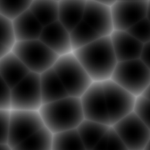
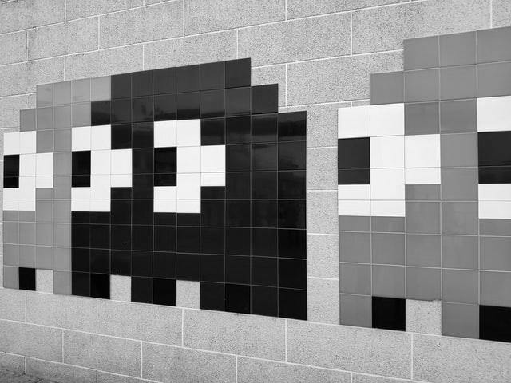
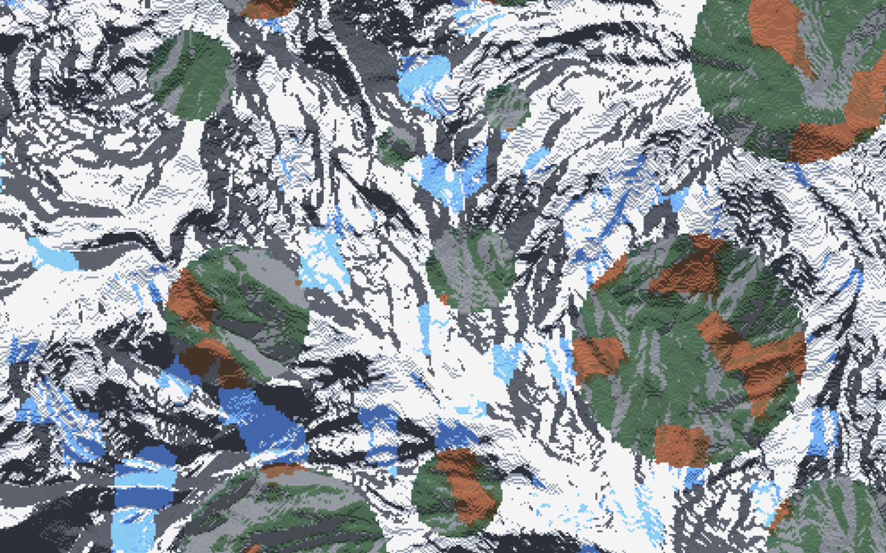

Sampler Configuration¶
A sampler is a config defined function that maps coordinates and the world seed to a set of output values.
A ‘sample’ is defined as a single calculation provided by a sampler, and the result of that calculation is regarded as the ‘output value’. A collective set of output values is regarded as ‘noise’.
The output values determine some kind of behaviour for each block or column. This behaviour is dependent on the context of the sampler definition.
Sampler Categories¶
Samplers that ‘produce noise’, i.e some pattern of values based on the input.
Samplers that use random values for every input, with no regard for producing any discernable structure. Outputs tend to look like tv-static.
Samplers where outputs produce structured noise. Inputs close in distance tend to produce similar output values.
A group of samplers that use similar algorithms that produce outputs dubbed ‘simplex’ noise.
Samplers that take other samplers as inputs. Mutator samplers typically act as ‘filters’ that provide some kind of modification to the output of other sampler(s).
A category of mutator samplers that redistribute the output values of a sampler.
Sampler Types¶
WHITE_NOISE¶
Produces White noise.

frequency Float
Controls the frequency of noise.
Default: 0.02
salt Integer
Determines the seed for the sampler.
Default: 0
POSITIVE_WHITE_NOISE¶
Identical to WHITE_NOISE, but redistributed to only produce positive values for convenience.
frequency Float
Controls the frequency of noise.
Default: 0.02
salt Integer
Determines the seed for the sampler.
Default: 0
GAUSSIAN¶
Identical to WHITE_NOISE, but redistributed to follow a gaussian distribution.
frequency Float
Controls the frequency of noise.
Default: 0.02
salt Integer
Determines the seed for the sampler.
Default: 0
PERLIN¶
Produces Perlin noise.
frequency Float
Controls the frequency of noise.
Default: 0.02
salt Integer
Determines the seed for the sampler.
Default: 0
Tip
It is recommended to use other simplex based samplers rather than PERLIN, as Perlin noise produces signficant directional artifacts, which may be undesired.
SIMPLEX¶
Produces Simplex noise.
frequency Float
Controls the frequency of noise.
Default: 0.02
salt Integer
Determines the seed for the sampler.
Default: 0
OPEN_SIMPLEX_2¶
Produces Simplex noise (using the algorithm from OpenSimplex2).

frequency Float
Controls the frequency of noise.
Default: 0.02
salt Integer
Determines the seed for the sampler.
Default: 0
OPEN_SIMPLEX_2S¶
Produces smoother Simplex noise (using the algorithm from OpenSimplex2).
frequency Float
Controls the frequency of noise.
Default: 0.02
salt Integer
Determines the seed for the sampler.
Default: 0
VALUE¶
Produces Value noise using linear interpolation (bilinear for 2D, trilinear for 3D).
frequency Float
Controls the frequency of noise.
Default: 0.02
salt Integer
Determines the seed for the sampler.
Default: 0
VALUE_CUBIC¶
Identical to VALUE except using cubic interpolation (bicubic for 2D, tricubic for 3D).
frequency Float
Controls the frequency of noise.
Default: 0.02
salt Integer
Determines the seed for the sampler.
Default: 0
GABOR¶
Produces Gabor noise.
Warning
The GABOR sampler is significantly slower at producing noise compared to other noise samplers.
frequency Float
Controls the frequency of noise.
Default: 0.02
salt Integer
Determines the seed for the sampler.
Default: 0
rotation Float
Default: 0.25
isotrophic Boolean
Default: true
deviation Float
Default: 1.0
impulses Float
Default: 64.0
frequency_0 Float
Default: 0.625
CELLULAR¶
Produces cellular / Worley noise.
DIAGRAM

Black dots - The center of each cell.
Red lines - A random direction and distance from the cell center, called ‘jitter’.
Blue dots - The cell origin, determined by jitter from the cell center.
Green dot - Coordinates being sampled.
Purple line - Distance to the closest cell origin.
Orange line - Distance to the second closest cell origin.
Gold line - Distance to the third closest cell origin.
PARAMETERS
frequency Float
Controls the frequency of noise.
Default: 0.02
salt Integer
Determines the seed for the sampler.
Default: 0
distance String
The method used for calculating the distance from the cell origin.
Default: EuclideanSq
Distance Types
EuclideanEuclideanSqManhattanHybrid
return String
The function the sampler will use to calculate the noise.
Default: Distance
Return Types
Definitions:
s - The coordinates being sampled.
c - The coordinates of the nearest cell origin.
d1 - The distance from the nearest cell origin.
d2 - The distance from the second nearest cell origin
d3 - The distance from the third nearest cell origin
Types:
NoiseLookup- Passescinto a sampler, and returns the output.CellValue- Returns a random value based onc(Equivalent toNoiseLookupwith a WHITE_NOISE sampler).Angle- Returns the angle fromstoc.Distance- Returnsd1.Distance2- Returnsd2.Distance2Add- Returns(d1 + d2) / 2.Distance2Sub- Returnsd2 - d1.Distance2Mul- Returns(d1 * d2) / 2.Distance2Div- Returnsd1 / d2.Distance3- Returnsd3.Distance3Add- Returns(d1 + d3) / 2.Distance3Sub- Returnsd3 - d1.Distance3Mul- Returnsd3 * d1.Distance3Div- Returnsd1 / d3.
jitter Float
Determines how far cell origins can randomly spread out from the center of cells.
Default: 1
A jitter of 0 places cell origins exactly in the center of each cell, resulting in a perfect grid.
Values between -1 and 1 are recommended, as values outside that range may produce artifacts.
lookup Sampler
The lookup sampler used when the distance parameter is set to NoiseLookup
Default: OPEN_SIMPLEX_2 sampler
IMAGE¶
Outputs the channel of an image that is tiled, redistributed from the channel range [0-255] to output range [-1, 1].
image String
Path to the image relative to the config pack directory. (For Windows users: Use the / directory separator instead of \)
Example path: path/to/the/image.png
frequency Float
Frequency of the image. Determines how the image gets scaled.
A frequency of 1.0 means 1 pixel = 1 block, a frequency of 2.0 means 2 pixels = 1 block.
Attention
Frequencies below 1.0 are not recommended, as pixels aren’t interpolated when upscaled;
results may look pixelated depending on use.

0.25 frequency = 0.25 pixels = 1 block or 1 pixel = 4 blocks (as demonstrated above using a block grid).
channel String
Which channel of the image to output.
Valid channels:
GRAYSCALEALPHAREDGREENBLUE
Original Image

Grayscale

Alpha Channel*

Red Channel

Green Channel
Blue Channel

*The alpha channel is all white because there is no transparency in the original image.
Example Image Samplers

{kind=link}
{kind=link}
World generated using the mountain heightmap to shape the terrain, and the circles to determine biome temperature:
{kind=link}
Terrain Sampler (Using LINEAR_HEIGHTMAP to work as a terrain sampler)
type: LINEAR_HEIGHTMAP
base: 128
scale: 64
sampler:
type: IMAGE
image: mountain_heightmap.png
channel: GRAYSCALE
frequency: 1
Temperature Sampler
type: IMAGE
image: grayscale_circles.png
channel: GRAYSCALE
frequency: 1
CONSTANT¶
Outputs a constant value, regardless of the inputs. Typically used in cases where you don’t want the sampler to do anything.
value Float
The value to be outputted.
Default: 0.0
DOMAIN_WARP¶
Warps a sampler by another sampler. See Domain Warping for more information.
warp Sampler
The sampler that determines warping.
sampler Sampler
The sampler to be warped.
amplitude Float
How much warping to apply.
Default: 1.0
KERNEL¶
kernel List of List of Float
sampler Sampler
factor Float
Default: 1.0
frequency Float
Default: 1.0
LINEAR_HEIGHTMAP¶
Treats a 2D sampler as a heightmap, converting it to a 3D SDF for use as a terrain sampler.
base Float
The base y level of the terrain.
sampler Sampler
The sampler to be used as a heightmap.
Default: CONSTANT sampler
scale Float
Scales the height of the heightmap.
Default: 1.0
FBM¶
sampler Sampler
octaves Integer
Default: 3
gain Float
Default: 0.5
lacunarity Float
Default: 2.0
weighted-strength Float
Default: 0.0
PING_PONG¶
sampler Sampler
octaves Integer
Default: 3
gain Float
Default: 0.5
lacunarity Float
Default: 2.0
weighted-strength Float
Default: 0.0
ping-pong Float
Default: 2.0
RIDGED¶
sampler Sampler
octaves Integer
Default: 3
gain Float
Default: 0.5
lacunarity Float
Default: 2.0
weighted-strength Float
Default: 0.0
LINEAR¶
Redistributes the range [min, max] to [-1, 1], typically for use with weighted
pools.
sampler Sampler
max Float
min Float
CLAMP¶
Outputs max when the sampler outputs a value greater than max, and returns min
when the sampler outputs a value less than min, used to constrain sampler outputs to
a certain range.
sampler Sampler
max Float
min Float
NORMAL¶
Redistributes normally distributed outputs to be evenly distributed.
sampler Sampler
mean Float
standard-deviation Float
groups Integer
Default: 16384
PROBABILITY¶
Redistributes the range [-1, 1] to [0, 1], typically used in cases where it’s easier to
work with values from 0 to 1, e.g defining a threshold as a percentage of a noise sampler.
sampler Sampler
SCALE¶
Evaluates sampler() * amplitude.
sampler Sampler
amplitude Float
POSTERIZATION¶
Applies a step function to the sampler, where steps determines how many steps will be within
the range [-1, 1].
sampler Sampler
steps Integer
ADD¶
Evaluates left() + right().
left Sampler
right Sampler
SUB¶
Evaluates left() - right().
left Sampler
right Sampler
MUL¶
Evaluates left() * right().
left Sampler
right Sampler
DIV¶
Evaluates left() / right().
left Sampler
right Sampler
MAX¶
Evaluates max(left(), right()).
left Sampler
right Sampler
MIN¶
Evaluates min(left(), right()).
left Sampler
right Sampler
EXPRESSION¶
Evaluates an arbitrary user defined expression as the sampler output. Expression samplers additionally allow the use of user defined functions, including other samplers, as well as constants defined within the sampler.
expression String
The expression to be evaluated for each sample. Variables x, y (3D only), and z
act as the sampler’s coordinate inputs.
Expression example
expression: (x * 3) / z
variables Map < String : Float >
Defines a mapping of variable names to values for use in the scope of the expression. This
is most useful for providing named constants that can easily be modified if needed.
Default: Empty map
Example defining variables
variables:
a: 1
b: 2
samplers Map < String : DimensionApplicableSampler >
Defines a mapping of function names to samplers.
Each sampler may be utilized within the expression like so: <name>(<x>, <z>) (for 2D) or
<name>(<x>, <y>, <z>) (for 3D), where <name> is the declared function name, and where
the respective axis coordinates are the coordinate inputs passed to the sampler.
Default: Empty map
Note
Samplers defined within an EXPRESSION sampler must be DimensionApplicableSamplers,
see the DimensionApplicableSampler section for details.
Example defining samplers
samplers:
whiteNoise:
dimensions: 2
type: WHITE_NOISE
functions Map < String : MathFunction >
Defines a mapping of function names to user-defined math functions. Functions may be
called within the expression like so <name>(<arg 1>, <arg 2>, ...), where <name> is the declared
function name, and where each input coorresponds to the argument list defined by the function.
Default: Empty map
Example defining functions
functions:
addThenDivide:
arguments:
- a
- b
- c
expression: (a + b) / c
Example Expression Samplers
type: EXPRESSION
expression: 1 + 1
The sampler above outputs the result of 1 plus 1, therefore the sampler will always
output 2.
type: EXPRESSION
variables:
a: 1
b: 2
expression: a - b
The sampler above outputs the result of a minus b, which is evaluated as
1 minus 2, therefore the sampler will always output -1.
type: EXPRESSION
functions:
addThenDivide:
arguments:
- a
- b
- c
expression: (a + b) / c
expression: addThenDivide(3, 2, 10)
The sampler above outputs the results of passing 3, 2, and 10 into
the function addThenDivide(). This function evaluation would be (3 + 2) / 10,
or 3 + 2 = 5, then 5 / 10 = 0.5. Therefore the sampler will always
output 0.5.
type: EXPRESSION
expression: x + z
The sampler above will output the result of adding the x coordinate and the z
coordinate. For example, if Terra wanted to sample a block where x = 4, and z = 2,
that sample would return 4 + 2 or 6 for that block.
type: EXPRESSION
samplers:
whiteNoise:
dimensions: 2
type: WHITE_NOISE
expression: whiteNoise(2, 5)
The sampler above will output the result of a 2D WHITE_NOISE sampler when passed
the coordinates X = 2 and Z = 5.
type: EXPRESSION
variables:
someConstant: 3
anotherConstant: 2.5
functions:
add:
arguments:
- a
- b
expression: a + b
samplers:
exampleSampler:
dimensions: 2
type: WHITE_NOISE
expression: |
exampleSampler(x * 2, z * 2) +
add(someConstant, anotherConstant)
The expression sampler above defines:
Two variables
someConstantandanotherConstant, which are3and2.5respectively.A 2 argument function
exampleFunction(), that simply adds the two arguments together.A 2D sampler
exampleSampler().- An expression that:
- Evaluates
exampleSampler()using: xcoordinate multiplied by2as the X coordinate, andzmultiplied by2as the Z coordinate.
- Evaluates
- Evaluates
add()using: 3(defined bysomeConstant) as theaargument, and2.5(defined byanotherConstant) as thebargument.
- Evaluates
Adds the result of
add()or5.5to theexampleSampler()evaluation.Outputs the final result.